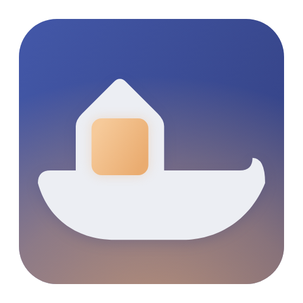

바뀌는 파일 미리 보기
설치 전에 바뀌는 파일을 미리 보여 주고 동의를 받습니다
게임 패치 관리 앱
배포자가 서명한 패치만 설치하고 언제든 원래대로 되돌립니다
설치판은 필요한 WebView2를 함께 설치합니다

설치판과 포터블 가운데 원하는 방식을 받으세요
배포 글에 적힌 키 지문과 같은지 확인하세요
패치를 적용할 게임 폴더를 고르고 설치하세요
설치 전에 바뀌는 파일을 미리 보여 주고 동의를 받습니다
바꾸는 파일은 백업하며 소스가 없어져도 설치 기록으로 복구합니다
exe와 dll 같은 실행 파일은 쓰거나 바꾸지 않습니다
배포자가 새 버전을 내면 알려 주고 눌러서 업데이트합니다
서명은 배포자를 확인할 뿐 패치 안 코드의 안전성은 확인하지 않습니다
게임 안에서 실행되는 코드가 들어 있는 패치는 따로 표시합니다
공개 준비 중입니다